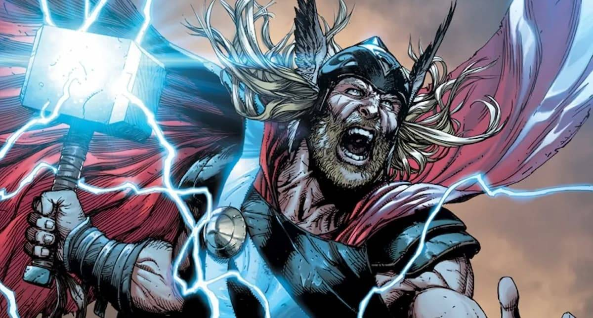

Thor es el Dios del Trueno, miembro de la raza conocida como los Asgardianos, un grupo de seres humanoides de la Dimensión de Bolsillo de Asgard,
el Reino Eterno. Thor es el hijo de Odin, el Padre de Todo y rey de Asgard. Fue adorado por los humanos conocidos como vikingos y pasó a formar
parte de la Mitología nórdica. Armado con su martillo Uru encantado Mjolnir, que le ayuda a canalizar sus energías divinas, se convirtió en el
guerrero más poderoso de los Diez Reinos. Cuando su comportamiento irresponsable e impetuoso fue demasiado, Odín lo envió a Midgard (más conocido como Tierra)
como un estudiante de medicina mortal discapacitado llamado Donald Blake, despojado de su memoria. Después de aprender a ser humilde, recuperó su memoria así
como sus poderes divinos. Thor pasó a convertirse en un campeón de Midgard, así como en uno de los miembros fundadores de los Vengadores; "Los héroes más
poderosos de la Tierra".